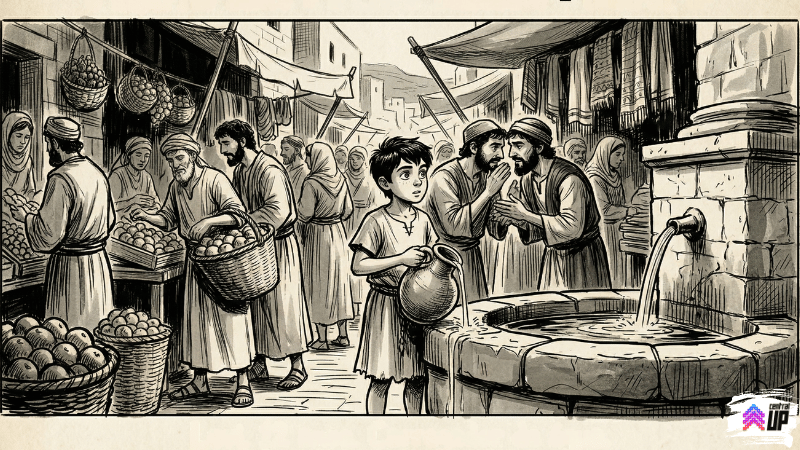
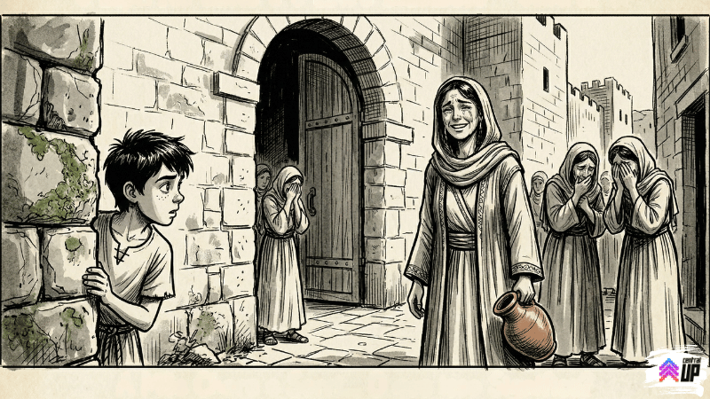

Domingo de manhã. Mercado de Jerusalém. E uma notícia que não fazia sentido nenhum.
⚡ Progresso da semana
33%
📖 O boato do mercado
Levi não dormiu direito em dois dias.
Na sexta, ele tinha visto aquilo. No sábado, tinha ficado em casa porque era o dia de descanso e não tinha pra onde ir de qualquer jeito. Ficou virando de lado na esteira de palha, tentando pensar em outras coisas. No trabalho. No dinheiro da jarra quebrada que ia ter que explicar pro pai. No vizinho que roncava do outro lado da parede.
Mas todo caminho mental levava de volta ao mesmo lugar: aquele olhar.
"Gente que está morrendo não olha assim. Está fazendo isso errado ou eu não entendo nada."
Quando o céu começou a clarear, ele desistiu de dormir. Pegou as jarras (a que sobrou, pelo menos) e foi pro mercado mais cedo do que precisava.
O mercado de Jerusalém de manhã cedo é uma bagunça boa. Cheiro de pão quente, especiarias, peixe recém-chegado do lago. Todo mundo falando ao mesmo tempo, ninguém ouvindo ninguém.
Levi foi enchendo a jarra na fonte quando ouviu dois homens conversando na tenda ao lado.
Baixinho. Aquele tipo de conversa que as pessoas têm quando o assunto é perigoso.
"Dizem que ele voltou."
"Quem?"
"Aquele lá. O que crucificaram na sexta."
Silêncio.
"Isso é impossível."
"Eu sei. Mas dizem."

Levi parou na hora. Derramou metade da água da jarra. De novo.
Jesus. Estavam falando de Jesus.
Ele virou pra ouvir melhor, fingindo que estava ajeitando a alça da jarra. Os dois homens abaixaram mais a voz ainda e foram embora rápido.
Levi ficou parado com a jarra meio vazia na mão, com aquela sensação esquisita de que o mercado todo podia ouvir o barulho do próprio coração dele.
"Isso é uma mentira. Tem que ser uma mentira. Morto não volta."
Mas a voz lá dentro não estava convicta.
Ele olhou ao redor. O mercado todo continuava funcionando normalmente, como se nada tivesse acontecido. Como se dois homens não tivessem acabado de dizer a coisa mais absurda do mundo de um jeito completamente sério.
Levi tomou uma decisão.
Ia descobrir a verdade. Ia provar que era mentira. Ia encontrar alguém que tivesse visto o corpo, que confirmasse que Jesus estava morto como qualquer pessoa fica depois de uma crucificação, e voltaria pra casa com a cabeça no lugar.
Fácil assim.
🗺️ Ajude Levi a investigar
Levi sai pelo mercado tentando provar que o boato é mentira. Clique em cada local para ver o que ele descobriu. Visite os três!
📍 Jerusalém — manhã de domingo
Levi chegou até o jardim onde diziam que estava o túmulo. Tinha gente parada do lado de fora, olhando pro nada com cara de quem acabou de ver uma coisa que não sabe como explicar. A pedra estava de lado. O buraco estava aberto. E estava vazio. Levi olhou por um bom tempo pro fundo escuro do túmulo esperando que surgisse uma explicação razoável. Nenhuma surgiu.
Levi achou dois soldados num canto, conversando nervoso. Quando ele chegou perto fingindo buscar água, ouviu pedaços da conversa: "a pedra se moveu sozinha" e "não vou contar isso pra ninguém nunca mais". Um deles olhou pro lado, viu Levi, e os dois ficaram em silêncio imediato. Aquele tipo de silêncio que diz mais do que qualquer explicação.
Esse foi o momento mais estranho de todos. Levi viu um pequeno grupo de mulheres perto do portão leste. Uma delas estava chorando. Mas não do tipo chorando de tristeza normal. Era um choro que misturava lágrima com sorriso, o rosto todo bagunçado de emoção que não cabia numa expressão só. Levi nunca tinha visto isso antes. Nunca tinha visto alguém chorar desse jeito, como se a coisa mais impossível do mundo tivesse acontecido e fosse boa.

Locais visitados: 0 de 3
Levi voltou pra casa com a jarra cheia, mas a cabeça completamente vazia de explicações.
Ele queria provar que era mentira. Tinha saído com esse objetivo. Mas cada lugar que visitou deixou não uma resposta, e sim uma pergunta maior do que a anterior.
O túmulo vazio. Os soldados assustados. E aquela mulher com o rosto todo molhado de um choro que ele não sabia classificar.
"Como se chora de alegria? Isso faz sentido?"
A tarde veio. Levi entregou as cargas do dia sem prestar atenção em nenhuma delas. O cliente reclamou que ele devolveu o troco errado. Provavelmente devolveu.
Na hora de dormir, a pergunta tinha mudado de forma.
Antes era: "Por que alguém olha assim quando está morrendo?"
Agora era: "E se ele não estivesse?"
✝️ Levi não sabia, mas Jesus já tinha ensinado sobre isso
"Porque Deus amou o mundo de tal maneira que deu o seu Filho unigênito, para que todo o que nele crê não pereça, mas tenha a vida eterna."
— João 3.16 · NTLH
Levi estava tentando provar que a morte era mais forte. Que o fim era o fim. Que morto fica morto.
Mas a história de Jesus não é sobre um homem que morreu. É sobre o Filho de Deus que entrou na morte de propósito, por amor, e saiu do outro lado porque a morte não tinha poder sobre ele.
O túmulo vazio que Levi viu não era o fim de uma história. Era o começo de outra. A maior de todas.
Deus não amou o mundo de longe. Ele veio até o mundo, passou pela morte, e abriu uma porta que nunca mais vai fechar.
"Senhor, às vezes eu também quero provar que você não é real. Que é tudo mentira. Mas você não tem medo das minhas dúvidas. Me ajuda a ser honesto com o que encontro no caminho. Amém."
🔮 Amanhã na história de Levi
😭
Levi não conseguia parar de pensar naquela mulher.